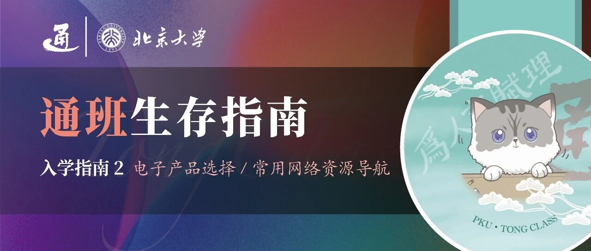

通班生存指南 | 入学指南（2）


请滑动翻阅来自通班的信～
本期概要
Part 1. 电子产品选择
电子产品是大学生学习生活的必备单品，对于AI及计算机相关专业的学生尤是如此。电脑应当如何选择呢？需要选购高性能笔记本用于科研目的吗？手机应当如何选择？iPad等平板是否必要？这里可以找到你想要的答案！
Part 2. 常用网络资源导航
进入北大，有哪些日常学习生活常用的网站和公众号呢？北大门户应当如何使用呢？此外，科学上网能够带来许多有用的东西，比如可以使用Google、可以访问GitHub和ChatGPT等等，但请保证你安全、健康、正确地科学上网。
01
SELECT ELECTRONICS
电子产品选择

📝 AI专业如何选择电子产品？
以下各建议均为供稿同学个人观点，仅供参考，具体选择丰俭由人，请同学们根据自己的实际需要酌情采纳！
电脑
如果只选择一台电脑，那么我首先推荐购置一台续航较长、便于携带的轻薄笔记本。首先，科研等需要较高性能和大量算力的工作通常不会需要在个人电脑上完成，而是通常通过ssh远程连接服务器/实验室的主机和集群完成的。因此，在选择个人电脑时，可以不用过多考虑科研工作对电脑性能的需求，而是应主要考虑日常携带上课/记笔记/写文章等需要。
出于轻薄和续航长的目的，我首先推荐MacBook，其中MacBook Air系列更加轻薄便携、便宜实惠，且续航超长，而MacBook Pro系列性能更强大但价格相对较高。如果不习惯macOS系统，可以考虑Windows系统的轻薄本/办公本（如联想thinkbook、华硕等）。有同学可能担心macOS系统无法适配一些专业软件，本人的经验是，对于AI相关的软件，如果macOS无法适配那么很大可能性Windows系统也无法适配（鉴于我们的专业领域相对前沿，所用软件的开发者很多都是使用macOS生态的，一些传统工科的古早软件只适配Windows系统的情况很少出现），那么可能只能用Linux（如Ubuntu）系统了，一般都由实验室提供。
对于有余力或想打游戏（bushi）的同学，一个不错的想法是在以上基础上双持一部Windows系统的游戏本/性能本（如：外星人、拯救者……），可以长期放在宿舍作为个人主机使用，而将轻薄本作为便携随身携带的工具。那么这部电脑可以弱化对于重量和续航的要求（放在宿舍为主、一直连着电），而可以把配置和性能选高一点，如1TB存储、32GB内存、3070或以上的显卡（Again丰俭由人）。这样，可以以更快的速度在个人电脑上跑一些小型程序（如课程大作业等），存储一些占用空间较大的个人资料，以及畅享游戏体验（x）（友情提示：千万不要游戏上瘾！还是要以学业为重！）
关于Linux系统的学习与使用，在AI相关的科研是必须的，但个人认为在正式进入课题组、被分配Linux（通常是Ubuntu）系统的电脑/要使用通班集群前没有必要提前在个人电脑上安装试用。请相信，如果你在选择日常使用的个人电脑，你一定不会想它是Office三件套和视频播放器的安装和使用较为艰难的Linux系统的…… 如果实在想早些开始接触Linux，可以考虑在移动硬盘上安装一个即插即用的双系统，相关教程可在CSDN搜索“Ubuntu 即插即用”等，但不建议没有较高电脑使用和维修水平的同学盲目尝试，有一定概率把电脑系统搞崩或导致数据全部丢失。
有同学会问上课要不要带电脑，如果你是想听课记笔记的话就不一定，但不少带电脑是去摸鱼（卷）的，未来你可能会有类似观察或体验(x) 很少有专业课在课上给你时间来写和跑课内讲的代码，因此大部分时间其实只带平板或纸笔就够了，平板+键盘也是个不错的选择。
另外，教室的插座是很有限的，平均来讲一个中等大小的教室也就四五个的样子，想要占到宝贵的电源就不得不比上课时间提前很多去教室了（教学楼的自习区倒是基本每个座位都有插口，但是使用高峰期也基本是满员的）。因此，带电脑去上课还需要考虑续航问题。

学长学姐说：倪嘉怡：
Linux 是计算机专业学生常用的操作系统。有同学会询问是否需要专门购置一台 Linux 电脑。事实上，虽然部分对 Linux 系统有浓厚兴趣的同学可能会选择单独购买设备，但大多数情况下，Linux 的使用需求可以通过配置双系统、虚拟机或 Windows 子系统（WSL, Windows Subsystem for Linux）来满足。在 robotics 领域中，仿真引擎通常需要在本地 Linux 环境中运行，因此对 Linux 设备的依赖较高。而在其他人工智能方向中，训练任务一般不依赖图形化界面，主要通过 SSH（Secure Shell）协议远程连接到 Linux 服务器进行操作，因此对本地 Linux 环境没有强制要求啦。
手机
对于手机的选择同学们或多或少都一定有一些自己的经验，建议根据自己的实际情况、习惯以及喜好选购！一些小小的个人建议是：可以选择存储大一点的手机（推荐512GB及以上），因为上大学后的社交信息大爆炸很可能会导致微信等社交软件占用上百GB的存储空间，待存储空间不够时无论是清理还是更换设备都比较费时费力，不如一步到位。此外，鉴于教室内和校园公共场所插座有限，续航时间长也是加分项。最后，建议可以选购相对充足一些的流量套餐，以备校园网卡顿、连接不上、速度过低时使用。
平板
关于“是否有必要购买平板”这一问题，我认为答案是肯定的。通班课程以及信科大部分专业课（除高数、线代外）都采用 PPT 授课。如果老师并非完全的ppt reader，那么课堂讲解往往会超出 PPT 文本范围；此时若仅用纸笔匆忙记录几句话，便容易丢失语境和逻辑链条，不利于课后整理与复习。而在平板上直接批注 PPT 则能很好地弥补这一不足：即使教师翻页速度较快，只要语速低于书写速度，就能完整记录所有扩展信息。相比之下，电脑打字的自由度往往受限，手写批注更契合思维流畅度，毕竟很多人记笔记的想象力的边界就是自己双手动作的极限。
至于如何选择，个人认为可以首先考虑系统生态，比如“苹果全家桶”，如果手机电脑都是苹果系统的，那么iPad的使用体验会非常丝滑且舒适！如果有吃性能的专业需求，如板绘、平面设计、打游戏等，可以选择iPad Pro，除此之外，如果只是作为记笔记的工具、看电子书或者满足影视观影需求的话，iPad Air是更具有性价比的选择，满足日常轻度使用绰绰有余！iPad mini屏幕较小，并不很适合记笔记、写作业等，不做推荐。可用于记笔记的软件有Goodnotes和Notability等，部分为苹果系统专属，部分需要付费，但确实可以较好地提高记笔记的效率和质量，可根据需要选择。暑期苹果教育优惠折扣力度较大，性价比整体较高，还可能获得额外的赠品，如AirPods或Apple Pencil。除了官方Apple Pencil外，第三方适配的屏幕笔也可根据自身需求选择。安卓系统的各大厂家现阶段生态也已相对完善，也可配套同系统其他电子设备使用。例如，一位同学表示：“个人一年前的这个时候入手了华为 MatePad 11.5s，用云记app记笔记，目前没发现什么很大的缺陷。”储存选择方面，128G略小但足够（记得别装太多游戏+定期清理微信占用），256G绰绰有余。
学长学姐说：陈旭峥：
对我个人而言，iPad是我大学几年必不可少的工具，起码在我大一到大三还需要进行很多书写的时候，iPad为我带来了极大的便利。我认为的优势有以下几点：
1. 课上记笔记：老师上课或是板书、或是用PPT，如果是板书，可以用Goodnotes等软件来记笔记，如果是PPT，也可以方便地把PPT放进这些软件里面来看，同时也便于批注；
2. 课下写作业：需要书写的作业可以直接在iPad上完成，在提交作业的时候只需要导出提交电子版，或者是打印出来即可；
3. 看电子书：大学的很多课本都非常厚，比如大二上的时候，你可能要同时背着物理、ICS、离散、数算的课本出门，这四本书加起来超过1000页，如果你能够习惯看电子书，就可以用一个iPad看所有的课本和参考书；
4. 如果你同时有iPad和MacBook，你还可以打开将MacBook连接到你的iPad，从而将iPad作为MacBook的另一块屏幕，更加方便完成比如写代码的工作；
5. 娱乐功能…

02
FREQUENTLY USED WEBSITES
常用网络资源导航
📝 常用网站
北大门户：https://portal.pku.edu.cn
选课网：https://elective.pku.edu.cn
教学网：https://course.pku.edu.cn
北大树洞：https://pkuhelper.pku.edu.cn/hole/
北京大学图书馆：www.lib.pku.edu.cn
北京大学网络服务：https://its.pku.edu.cn
📝 公众号推荐
有关官方公众号
PKU通班：北京大学通用人工智能实验班官方公众号（及同名视频号）
北京大学人工智能研究院：北京大学人工智能研究院（PKU-IAI）官方公众号
北京通用人工智能研究院：北京通用人工智能研究院（BIGAI）官方公众号
通智天下：北京通用人工智能学会公众号
北京大学智能学院：北京大学智能学院官方公众号
北京大学相关公众号
北京大学：北京大学官方公众号
北大团委：共青团北京大学委员会官方公众号
北京大学教务部：北京大学教务部官方公众平台
元培学院相关公众号
北京大学元培学院：北京大学元培学院官方公众号
北大元培人：元培学院团委公众号
元培学学学：元培学院学生学术学会公众号
学习相关公众号
赛艇先生：北大非官方学习资料收集整理平台
刷题相关公众号：代码随想录，宫水三叶的刷题日记，撸题猫
就业相关公众号：编程导航，程序员鱼皮，代码随想录，宫水三叶的思辨日记，IT服务圈儿，码哥跳动，拓跋阿秀，数据结构与算法
量化相关公众号：HFA Community，HFA Pro，量化投资QIA，量化投资与机器学习，QuantML，川总写量化，力的期权工作室
创业相关公众号：Founder Park，甲子光年，硅谷101，福布斯
学术相关公众号：将门创投，集智俱乐部，中国计算机学会，RLCN强化学习研究，深度强化学习实验室，图谱学苑，智源社区，自动驾驶之心
自学相关公众号：HelloGitHub，Python开发者，菜鸟教程，w3cschool编程狮，一口Linux，异步图书
其他公众号
I智通道合I、通班的筒子们、贰通乐园、通通肆只小猫咪：通班20-23级班级公众号
清北情报站：可领取北大专属PPT模板
全元光滑：北清趣味公众号
......
📝 北大门户
北大门户作为北大学生最熟悉最常用的网站之一，功能全面且便于检索，在这里可以办理日常学习生活中绝大部分网上业务，也可以查看各种通知公告。
在“信息服务”页面中，我们可以找到几乎全部与我们日常学习生活相关的操作链接，页面上方的“功能搜索”可以输入关键词快速检索自己所需要的功能。在“校内公告”页面中，我们可以看到学校和校内各单位发布的各类公告和通知。在“我的门户”页面中，我们可以查看和修改个人信息。
那么，我们可以通过门户访问哪些网页呢？
选课网、教学网
我的课表、我的成绩：每学期开始和结束后可以查看自己的课表和成绩。
课表查询：同学们可以自由查看每个学期每个院系或单位开设的所有课程，以及授课老师、上课时间、学分等等，方便合理地安排选课计划。
人员查询：一般用于查询和验证北大师生员工的简单个人信息，防止校外人员冒用本校师生信息。
校园卡、网费、浴卡充值：校卡、浴卡和网费是我们平时需要定期自行充值的，在门户都有相应的页面，快用完的时候要记得提前充值，以免急用时尴尬。此外，还可以使用北大门户的手机端用付款二维码替代校园卡，在食堂购餐。
我的邮箱：学校为每位同学设置了一个北大学生邮箱，标准账号格式为学号+后缀stu.pku.edu.cn。同学们可以给北大邮箱自行创建别名，收发各种官方以及学术相关的通知和邮件，也可以用于验证各种专业软件或网站的教育优惠。
教务部业务：教务部业务包括选课、成绩、学籍以及教学相关信息的申请与查询。
学工部业务：学工部业务包括保险、奖励奖学金、学生活动以及勤工助学等学生工作业务，可以根据需求在门户上进行查询办理。
学生预约访客：每人每日可为2人次、每月可为8人次亲友预约入校。
DeepSeek、小北学长、大模型试验场：内置的人工智能工具。
……
📝 WallessPKU
一个好用的科学上网方法是WallessPKU，通常的配置方法如下：
进入WallessPKU（网址见下），点击“点击这里”获取订阅地址
在下方选择自己的系统进行配置，前四个从上到下依次对应Windows电脑、安卓手机、Mac电脑、苹果手机的配置方法。

链接如下：
https://189854.xyz/blog/walless/2020/05/28/manual.html
WallessPKU的网址有时候会更换，所以也可以自己在网上找一些好用的科学上网方法或咨询学长学姐。WallessPKU的好处是免费，不需要额外花钱，缺点是有流量限制和安装相对复杂，请根据个人需求自行选用。
总结
在入学指南的第二篇，我们为大家介绍了AI专业应当如何选择电子产品，以及推荐了常用的网络资源，希望能给新同学们带来一些启发和帮助！在接下来的推送里，我们将开始为大家介绍其他入学前需要做的准备，例如如何自学编程、使用Git和GitHub等，敬请期待！最后，再次诚挚欢迎同学们加入北京大学通用人工智能实验班～
关于通班：
供稿 | 陈旭峥 陈应涵 黄勃翔 倪嘉怡 曾姜月
封面 | 严绍恒
编辑 | 陈应涵
排版 | 吕鸿坤